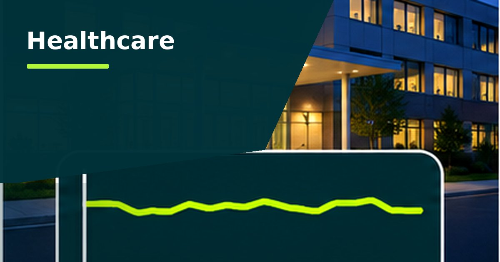

What to look for in your sector
Each type of building uses electricity differently. Choose yours to see what normal looks like and what to check first.


Schools and colleges
Schools are closed for about 13 weeks a year, so holidays and weekends should show very little use. When they don't, a schedule usually needs fixing.
Read moreOffices and council buildings
Office electricity use should drop sharply when people go home. Whatever carries on running is worth investigating.
Read moreLeisure centres and pools
Long opening hours and pools that run around the clock make leisure centres heavy electricity users. Start by understanding what makes up the overnight use.
Read more
Healthcare
Hospitals and many care settings run 24 hours a day, so out-of-hours use is less relevant. Comparing day with night, and peaks with supply capacity, tells you more.
Read moreIndustrial and warehouses
With shift work, getting the calendar right matters more than anything. Once it's set, use during shutdowns, compressed air leaks and refrigeration are easy to see.
Read moreRetail and hospitality
Fixed trading hours make out-of-hours use easy to spot. Refrigeration, signs and kitchen equipment are the most common causes.
Read moreCheck your own sites
Load several meters at once and the analyser ranks them, so you know which site to look at first.